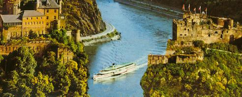

|


Travelling to BonnBy AirplaneThere are several advisable airports in Germany: Köln/Bonn (CGN)Köln/Bonn (CGN) is the closest airport to Bonn. It is well connected to all major European airports, and companies like German Wings and Happag Lloyd Express do their best to offer the cheapest flight from many european cities. The regular bus shuttle (line 670) takes about half an hour from the airport to the city center. Düsseldorf (DUS)For european participants it might also be convenient to get a cheap flight to Düsseldorf (DUS), which is about one train (see below) hour away from Bonn. Intercontinental flights to Amsterdam, London Heathrow or Paris Charles de Gaule often can be combined with connecting flights to Düsseldorf or Köln/Bonn. Frankfurt (FFM)Most intercontinental flights go through Frankfurt (FFM). From the Frankfurt airport station there are many direct trains (see below) to Bonn, taking approximately 1.5 hours.  A hint for those arriving during daylight: Choose a train via Koblenz and enjoy the trip through the beautiful Rhine Valey with all the castles around. If speed is your major concern, use the high speed train (ICE) that joins Frankfurt and Siegburg in about 55 minutes. From Siegburg, there are tram connections taking about 25 minutes to Bonn main station. By TrainDue to its central location, Bonn can be conveniently reached by train from many places in Europe. The Deutsche Bahn, Germany's national railway company, offers an international timetable search engine including internet ticket booking with credit cards. You can print out the tickets directly on your own printer at home, so there's no need to visit a ticket office at all. Choose your language: Search for your train directlyYou can buy a train ticket online and print it out at home. It will be valid for any train on the specified route starting on the specified day (for the entire next month). By CarAs parking is a problem inside of the city center, drivers should look out for a hotel offering an underground garage, e.g. the Günnewig Hotel. However, please note that using them usually requires additional payment. The public underground garages (Open map) in Bonn have the following prices (per day, i.e. 24h):
For maps and route recommendations, see Map24 in Edited by the AOSD Conference Committee. Send comments to: webmaster  aosd.net aosd.net |